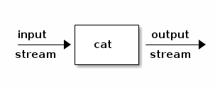
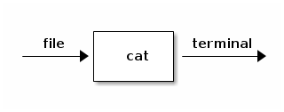
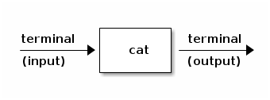
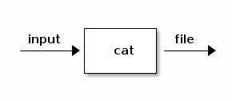
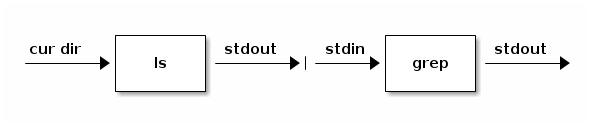

CS1-Sullivan: Lab 1
Table of Contents
1 Linux
1.1 Goals
- Make sure everyone has VM running
- Learn basic Linux concepts
1.2 Linux
1.2.1 terminal
- you've already used a terminal window
- a terminal runs a program called a shell
- the shell lets you interact with Linux
- to run programs and see results
- to suspend or "kill" programs
- to run programs in the foreground/background
1.2.2 other basic programs
- pwd print your working directory
- ls lists files in your working directory
- cat outputs the contents of a file
- programs take command line arguments
1.2.3 the ls command
- ls lists names of files only
- ls -l gives more information
- ls -a lists hidden files
- ls -l -a does both
- ls -la is easier to type
- . is current directory, .. is parent
1.2.4 current directory
- the shell remembers your current directory
- remember to use pwd to print it out
- programs like ls work on your cur. dir.
- you have a home directory and …
- it is initially your current directory
- use the cd command to change cur. dir.
- use cd <name> to move up and down hierarchy
- cd with no arguments -> home directory
1.2.5 directory shorthands
- . means the current directory
- .. means the parent of the current directory
- ~ means your home directory
- e.g., ls ~ lists files in home directory
1.2.6 creating files
- many ways to create basic files (emacs)
- use mkdir command to create directory
- create animals directory
- create basic file named cat in that directory
- store the text string, meow in that file
- print the content of the file to the screen
- change back to your home directory
1.2.7 other file operations
- use cp to copy file to another
- be careful about overwriting!
- use mv to move/rename a file
- use rm to remove a file
1.2.8 other shorthands
- * expands to all files in directory
- don't do rm * unless you really want to!
1.2.9 files
- The concept of a file is fundamental to Linux
- a file is either a basic file or a directory
- a directory contains a list of files
- think about this recursive definition
- draw some pictures of possible files
2 REPLs
The goal of this lab is to continue to boostrap your ability to program in a Linux environment by teaching you:
- the Unix pipe-and-filter model of computation
- a Linux command, grep, for searching files for text
- the wonders of read-eval-print-loops (REPLs)
- how to use REPLs at the command line and in emacs
- writing and exploring your first Idris program
2.1 More Linux
2.1.1 input and output streams
- many commands transform inputs to outputs
- data are consumed from an input stream
- results are produced on an output stream

2.1.2 example: the cat command
- cat takes data from an input stream
- cat <filename> uses file as input stream…
- …and sends it unchanged to standard output stream
- by default, standard output stream goes to your terminal

2.1.3 redirection
- redirection changes the input/output streams for a command
- whereas cat <filename> takes input from file …
- cat (all by itself) takes input from standard input
- the standard input stream by default is your terminal

2.1.4 try it!
- try it; type cat; it will sit there waiting for input
- each time you enter a line, cat will print it (to terminal)
- you signal end-of-file with a Control-D character
2.1.5 sending output to another stream
- just as commands can take input from another stream …
- … they can also send output to another stream
- to redirect command output to a file, use >

2.1.6 try it!
- type ls -l > myfiles.txt; then cat myfiles.txt
- type cat > some.txt; remember that ^D is EOF
- takes input from terminal, sends it to file
- now cat some.txt to see your text stored in file
- Note that > overwrites output; >> appends to output
- Try it on your own
2.1.7 an experiment
- predict what does cat file1 file2 do?
- what about cat file1 file2 > file3
2.1.8 grep
- grep <pattern> <input-file> searches input for content
- it prints out lines in input that match pattern
- try it: pick a pattern that's in myfiles.txt
- again: pick a pattern that's not in myfiles.txt
2.1.9 try it!
- download the text of Romeo and Juliette
- wget downloads contents at given URLs
- http://www.folgerdigitaltexts.org/download/txt/Rom.txt
- on how many lines does the word love appear?
2.1.10 pipe-and-filter model
- one program's output can be another's input

- to pipe one's output to another's input, use |
2.1.11 try it!
- try it: ls -l | grep <pattern>
- note that you don't have to give grep a filename!
- now extend your pipe with | sort
- type man sort at the command line
- modify pipeline to sort ignoring case and in reverse
2.1.12 The wc command
- wc stands for word count
- wc counts lines, words, characters in input
- now can you answer the Shakespeare question?
2.2 More Emacs
2.2.1 Emacs concepts
- file: data stored on computer
- buffer: copy of that data in emacs memory
- window: a view of a buffer in emacs memory
- mode: specialized editing functionality in a buffer
- modes often turned on based on filename extension
2.2.2 Buffers
- C-x C-b creates window and lists open emacs buffers
- the content displayed in this window is itself a buffer
- when you open a file, a buffer and a window are opened
- give it a try: C-x C-f and open a file (existing or new)
2.2.3 Exploring buffers
- now list all your buffers; identify the one for the file
- move point to a line for some buffer and hit Enter
- this will create a window onto that buffer
- C-x b switches window to previously viewed buffer; try it
- if you get lost, list your buffers C-x C-b and pick one
2.2.4 Closing windows and buffers
- C-x 1 closes all windows other than current
- Try it, then list buffers; they're all still there
- Split your window (C-x 2 or C-x 3) and visit another buffer
- C-x 0 closes the current window; are your buffers still there?
- C-x k kills the current buffer; try it; now is buffer still there?
- Note that changes to buffer are not saved to file until C-x C-s
2.2.5 Running shell within emacs
- emacs can do a lot, including running programs in windows
- Split window, then M-x shell (type shell at the M-x prompt)
- Now you're running shell (like in terminal) within emacs!
- try issuing some shell commands: ls, cat, grep etc.
- you can use emacs, e.g., to cut-and-paste command outputs
2.3 REPLs
2.3.1 Python REPL
- run python (no arguments) in terminal
- kicks you into the python shell (REPL)
- type code, REPL evaluates it, prints results
- try typing a print command, arithmetic expressions
- enter ^D (control-D) or quit() to exit from REPL
2.3.2 Python REPL inside emacs
- Create a simple Python program in emacs
- emacs activates Python mode for any *.py file
- Check status line to confirm Python mode
- Save your file
- Hit C-c C-c to launch Python REPL within emacs
- Notice that REPL loaded and ran your code
- Change your code and hit C-c C-c again
- Now kill python REPL buffer (practice)
2.3.3 Write a little Idris program
- cd my/stuff/cs1/lab2 (create directory as necessary)
- use emacs to create a new file called Bit.idr
- remember: emacs Bit.idr & to run it in background
- type this code in the buffer; save the file
data Bit = zero | one change: Bit -> Bit change zero = one change one = zero
- program defines data type, its values, and a function
2.3.4 Idris REPL
- run idris (no arguments) in terminal
- kicks you into the idris shell (REPL)
- load the file your wrote with :l Bit.idr
- enter ^D (control-D) to exit from REPL
- load the file again and go on to next step
2.3.5 Idris REPL inside emacs
- emacs activates Idris mode for any *.idr file
- launch REPL and load code in buffer using C-c C-l
2.3.6 Explore your Code
- at Idris prompt, type :t one to ask what type is one
- do the same for zero
- before you do the same for invert, predict the result
- does it make sense to ask about the type of Bit?
- now ask the REPL to evaluate an expression: invert one
2.3.7 Success!
- yeah, you're computing using Idris and its REPL!
- submit file and secret word for Lab2 on Collab
3 Quiz
4 Color
The purpose of this lab is to give you an opportunity to start with a set of requirements in English, to analyze them, and to implement and test an abstract data type to satisfy these requirements. Solutions can be produced straightforwardly using concepts and techniques that you have already learned. Work hard and quickly. If you get too stuck, ask for help.
4.1 What to Turn in
Show your work and give your names and email ids to a TA before you leave the lab. If you are unable to finish this work in the lab, complete it before class tomorrow (Friday) and be prepared to turn it in at the start of class.
4.2 Organization
You are to work with a partner on this lab. Find a partner now. There should be at most one group of three in any given lab session, and all others should be working in pairs.
4.3 A little color theory
Color is an aspect of the perception of electromagnetic spectra by the human visual system. The retina is the component of the system that diretly senses light. While natural light is generally a mixture of many different wavelengths of light, the retina responds most strongly to three, which we call red, green, and blue. These are called the primary additive colors.
This response is based on the retina's comrising just three kinds of color-sensing elements called cones. The human retina thus in effect reduces complex spectra to triples of red, green, and blue intensity values. All human-perceivable colors are representable as additive combinations of these primary colors. (There are rare individuals who have a fourth kind of sensor. We will ignore them here.)
In this lab, you will practice programming by devising, implementing, and testing several programs that represent and support computations involving these and certain other related colors.
4.4 Additive colors
When two primary colors of light (as opposed to paint) are mixed, the colors add to produce new colors. Here is what happens in reality.
- mixing red and green (light) produces yellow (light)
- mixing green and blue produces cyan
- mixing blue and red produces magenta
This is the complete set of colors that we will represent in this lab: \(color = \{ red, green, blue, cyan, mangenta, yellow \}\)
We call red, green, and blue the additive primaries. If you label the vertices of an equilateral triangle with the primary colors (red, green, blue), then you can represent pairwise mixtures of these colors the mid-points of the edges that connect them. Between red and green, for example, is a label for yellow, which is not an additive primary.
We note that white is obtained when all three of the primary colors of light are mixed. We will not try to represent white light in this lab.
TASK #1: Draw and complete the picture.
Now connect each color to the label across from it in this diagram. Green is across from magenta, for example. For purposes of this lab, we will call these pairs of colors complements. So the complement of green is magenta, for example. The relationship is symmetrical so it's also the case that the complement of magenta is green.
TASK #2: Draw and complete the diagram of these relationships.
TASK #3: Working within the directory that contains your pair.idr module (probably ~/my/stuff/cs1/code/idris), in a new Idris file called colors.idr, design and implement an abstract data type module, called colors, that (a) defines a type called color that represents the set of colors relevant to this lab, and that (b) defines the following set of functions:
- complement - given a color, return its complement
- additive - given a color, return true if it's a primary, otherwise false
- subtractive - give a color, return true if it's a primary, otherwise false
- complements - given a pair of colors, return true if they are complements, otherwise false
Test your code in the Idris REPL to be sure that it works as required.
4.5 Subtractive colors
By contrast, paint absorbs light. If you shine white light on paint, it absorbs certain colors and reflects back the rest. It appears to be the color of the light that it reflects. Paint subtracts colors from incident light. When paints of different colors are mixed, the mixture subtracts more colors from the incident light than either paint alone. Adding colors of paint (crayon, etc.) thus produces different results than adding the same colors of light.
Consider cyan paint (or inkjet printer ink). It absorbs red light (an additive primary) and reflects blue and green (additive primaries). Those colors of light mix to produce cyan. Yellow ink absorbs blue and reflects red and green. Magenta ink absorbs green and reflects red and blue.
Now consider what happens when one mixes these subtractive primary colors. Magenta absorbs green (and reflects red and blue) and yellow absorbs blue (and reflects red and and green). A mixture of magenta and yellow with therefore absorb a good deal of both green and blue, but will reflect all the red. This mixture of inks thus produces red!
TASK #4 Make a table associating pairs of subtractive primaries with the additive primary produced when the additive primaries are mixed.
TASK #5 Add a function to your module called mixink. Given any pair of subtractive primaries, it returns the additive primary color obtained by mixing those secondaries. The function should be left undefined for parameter values other than pairs of subtractive secondaries.
TASK #6 What warning does Idris produce for the mixink function? What value does it produce if applied to a parameter value not in its domain? Briefly (in at most a few sentences) explain what seems to be happening.
Hold your hands up when you are done with this exercise. If you do not finish, wait to be counted and show the TA how far you got. If you do not finish, finish the work before class Friday.